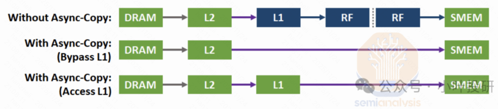
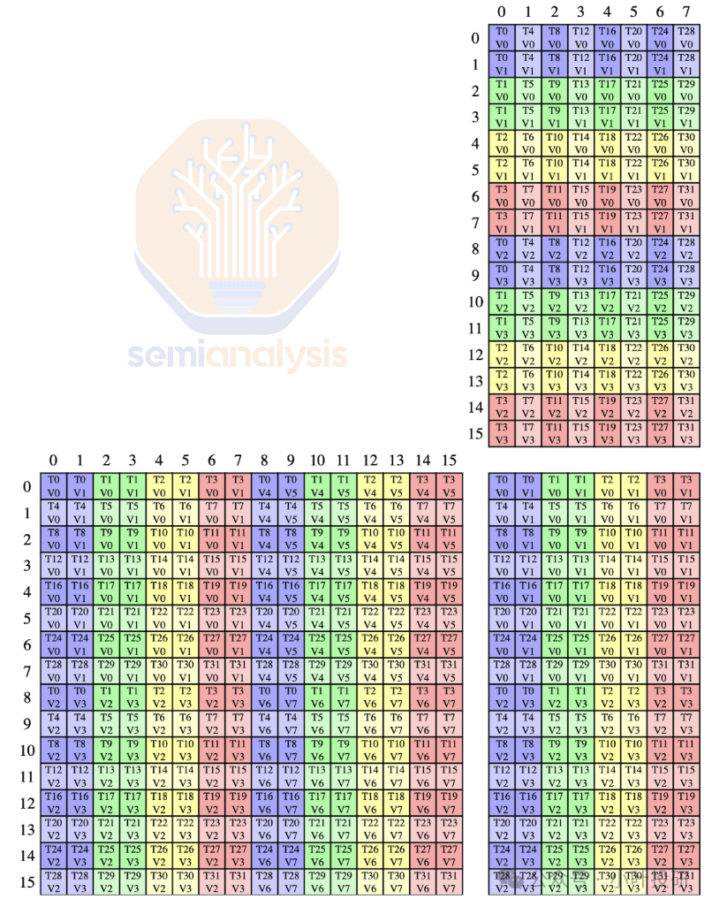
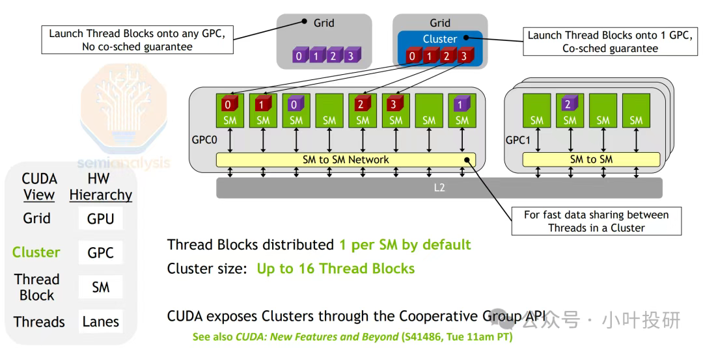
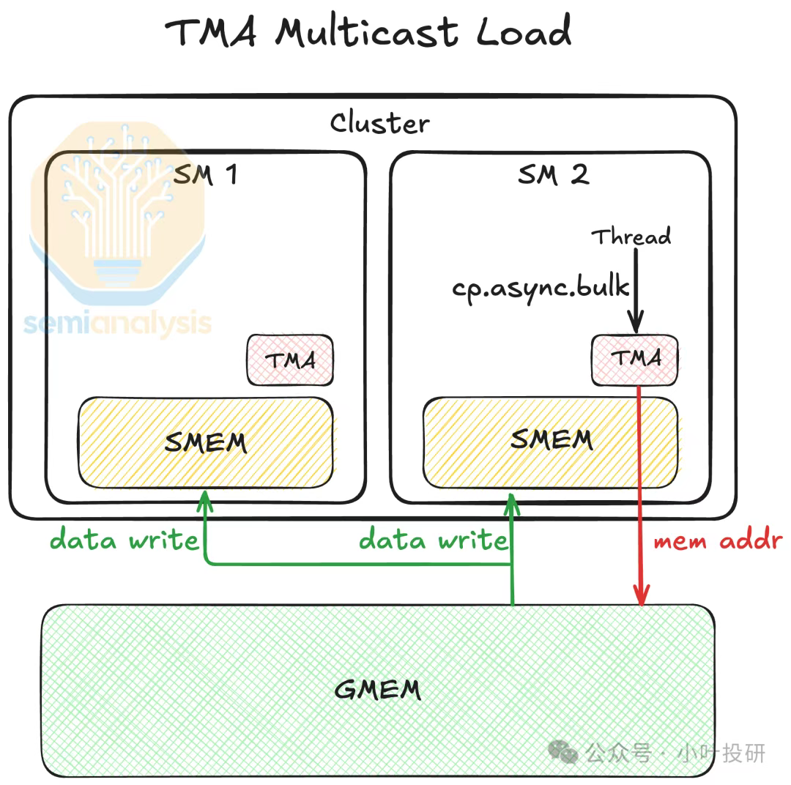
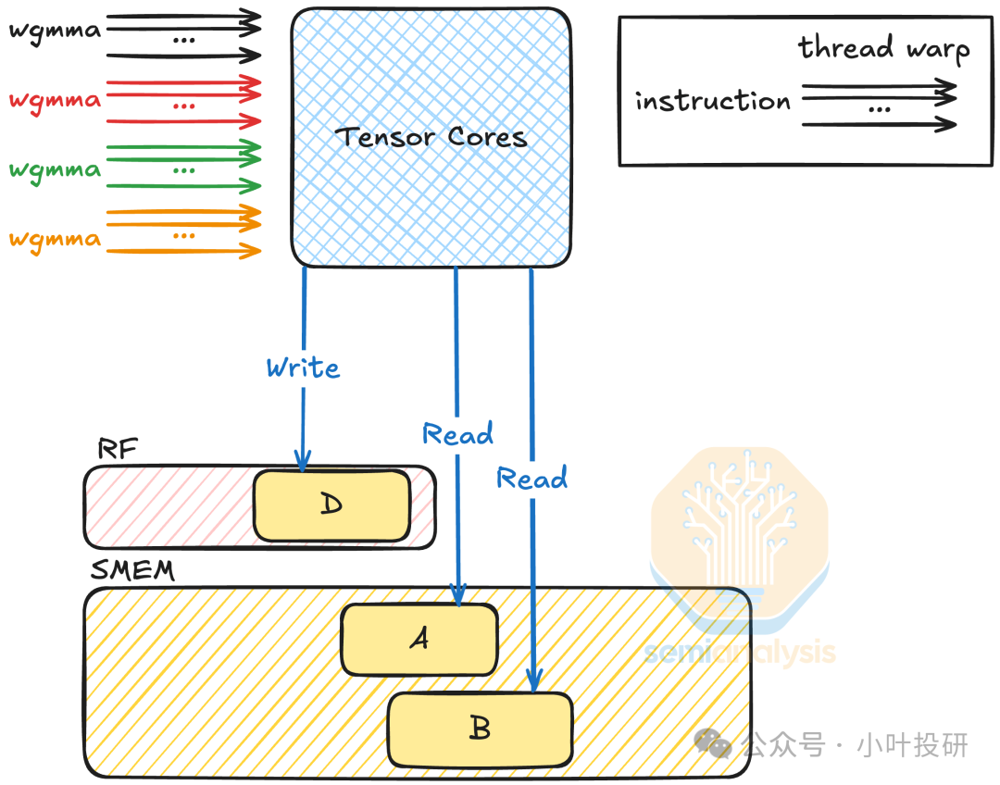

NVIDIA历代芯片架构简述
1999 年，英伟达发明了 GPU（graphics processing unit），英伟达 GPU 从 Fermi 到 Blackwell 共 9 代架构，时间跨度从 2010 年至 2024 年，具体包括费米（Feimi）、开普勒（Kepler）、麦克斯韦（Maxwell）、帕斯卡（Pashcal）、伏特（Volt）、图灵（Turing）、安培（Ampere）和赫柏（Hopper）和布莱克韦尔（Blackwell）架构。经过 15 年的发展，CUDA 已成为英伟达的技术“护城河”，Tensor Core5.0，NVLink5.0，NVswitch4.0，Transformer Engine2.0 等技术迭代更新，正如英伟达公司官方宣传语所言：人工智能计算领域的领导者，推动了 AI、HPC、游戏、创意设计、自动驾驶汽车和机器人开发领域的进步。
| 架构 | 发布时间 | 核心参数 | 特点&优势 |
|---|---|---|---|
| Fermi | 2010 | 16 个 SM，每个 SM 包含 32 个 CUDA Cores，一共 512 CUDA Cores | 首个完整 GPU 计算架构，支持与共享存储结合的 Cache 层次 GPU 架构，支持 ECC GPU 架构 |
| Kepler | 2012 | 16 个 SM，每个 SM 包含 32 个 CUDA Cores，一共 512 CUDA Cores | 游戏性能大幅提升，首次支持 GPU Direct 技术 |
| Maxwell | 2014 | 16 个 SM，每个 SM 包括 4 个处理块，每个处理块包括 32 个 CUDA Cores+8 个 LD/ST Unit + 8 SFU | 每组 SM 单元从 192 个减少到每组 128 个，每个 SMM 单元拥有更多逻辑控制电路 |
| Pascal | 2016 | GP100 有 60 个 SM，每个 SM 包括 64 个 CUDA Cores，32 个 DP Cores | NVLink 第一代，双向互联带宽 160GB/s，P100 拥有 56 个 SM HBM |
| Volta | 2017 | 80 个 SM，每个 SM 包括 32 个 FP64+64 Int32+64 FP32+8 个 Tensor Cores | NVLink2.0，Tensor Cores 第一代，支持 AI 运算，NVSwitch1.0 |
| Turing | 2018 | 102 核心 92 个 SM，SM 重新设计，每个 SM 包含 64 个 Int32+64 个 FP32+8 个 Tensor Cores | Tensor Core2.0，RT Core 第一代 |
| Ampere | 2020 | 108 个 SM，每个 SM 包含 64 个 FP32+64 个 INT32+32 个 FP64+4 个 Tensor Cores | Tensor Core3.0，RT Core2.0，NVLink3.0，结构稀疏性矩阵 MIG1.0 |
| Hopper | 2022 | 132 个 SM，每个 SM 包含 128 个 FP32+64 个 INT32+64 个 FP64+4 个 Tensor Cores | Tensor Core4.0，NVLink4.0，结构稀疏性矩阵 MIG2.0 |
| Blackwell | 2024 | 160个SM | Tensor Core5.0，NVLink5.0, 第二代 Transformer 引擎，支持 RAS |
Hopper 架构是第一个真正的异构加速平台，适用于高性能计算（HPC）和 AI 工作负载。英伟达 Grace CPU 和英伟达 Hopper GPU 实现英伟达 NVLink-C2C 互连，高达 900 GB/s 的总带宽的同时支持 CPU 内存寻址为 GPU 内存。NVLink4.0 连接多达 256 个英伟达 Grace Hopper 超级芯片，最高可达 150 TB 的 GPU 可寻址内存。
H100 一共有 8 组 GPC、66 组 TPC、132 组 SM，总计有 16896 个 CUDA 核心、528 个 Tensor 核心、50MB 二级缓存。显存为新一代 HBM3，容量 80 GB，位宽 5120-bit，带宽高达 3 TB/s。
2024 年 3 月，英伟达发布 Blackwell 架构，专门用于处理数据中心规模的生成式 AI 工作流，能效是 Hopper 的 25 倍，新一代架构在以下方面做了创新：
- 新型 AI 超级芯片：Blackwell 架构 GPU 具有 2080 亿个晶体管，采用专门定制的台积电 4NP 工艺制造。所有 Blackwell 产品均采用双倍光刻极限尺寸的裸片，通过 10 TB/s 的片间互联技术连接成一块统一的 GPU。
- 第二代 Transformer 引擎：将定制的 Blackwell Tensor Core 技术与英伟达 TensorRT-LLM 和 NeMo 框架创新相结合，加速大语言模型 (LLM) 和专家混合模型 (MoE) 的推理和训练。
- 第五代 NVLink：为了加速万亿参数和混合专家模型的性能，新一代 NVLink 为每个 GPU 提供 1.8TB/s 双向带宽，支持多达 576 个 GPU 间的无缝高速通信，适用于复杂大语言模型。
- RAS 引擎：Blackwell 通过专用的可靠性、可用性和可服务性 (RAS) 引擎增加了智能恢复能力，以识别早期可能发生的潜在故障，从而更大限度地减少停机时间。
- 安全 AI：内置英伟达机密计算技术，可通过基于硬件的强大安全性保护敏感数据和 AI 模型，使其免遭未经授权的访问。
- 解压缩引擎：拥有解压缩引擎以及通过 900GB/s 双向带宽的高速链路访问英伟达 Grace CPU 中大量内存的能力，可加速整个数据库查询工作流，从而在数据分析和数据科学方面实现更高性能。
英伟达 GB200 Grace Blackwell 超级芯片通过 900GB/s 超低功耗的片间互联，将两个英伟达 B200 Tensor Core GPU 与英伟达 Grace CPU 相连。在 90 天内训练一个 1.8 万亿参数的 MoE 架构 GPT 模型，需要 8000 个 Hopper 架构 GPU，15 兆瓦功率，Blackwell 架构只需要 2000 个 GPU，以及 ¼ 的能源消耗。
TensorCore
Volta
2017年，NVIDIA推出了划时代的 Volta 架构，并首次在 Tesla V100 GPU 中引入了名为 Tensor Core（张量核心）的专用计算单元。
Volta之前的MMA
对于传统GPU做矩阵乘法，“指令开销”远大于“计算开销”；
在Volta之前，GPU虽然广泛用于深度学习训练，但其核心计算仍依赖通用的CUDA核心执行浮点运算。以半精度（FP16）的融合乘加（HFMA）操作为例：
一次简单的浮点乘加仅消耗约1.5皮焦（pJ）的能量；
而驱动这条指令所需的控制逻辑开销——包括指令发射、调度、寄存器访问等——却高达 30皮焦（pJ）。
这意味着：95% 的能耗花在了“如何算”，而不是“算本身”。这种“指令功耗远高于计算功耗”的失衡，严重制约了AI训练的能效比和可扩展性。
volta解决指令开销：HMMA + TensoreCore
引入HMMA指令
Volta新增了一条全新的指令：HMMA（Half Precision Matrix Multiply-Accumulate）。
它不再处理单个数字，而是直接操作小规模矩阵块（如8x8），将数十次独立的乘加操作打包成一条指令执行。这样极大减少了指令调度次数。
TensorCore硬件落地
每个SM（流式多处理器）集成 8 个 Tensor Core；每4个线程组成一个“quadpair”，8个线程协同驱动一个Tensor Core；单次执行可完成 8×8×4 的矩阵乘法（A[8×4] × B[4×8] = C[8×8]），输出FP32精度结果。支持 FP16 输入 + FP32 累加，兼顾速度与数值稳定性。
Turing
Volta的缺陷在于，对于功耗、延迟、成本等方面敏感的部署场景，使用FP16仍然笨重，且需要完整权重计算，无法利用神经网络的稀疏性。
Turing解决方案：整数精度 + 稀疏计算
INT8/INT4支持
使用8位或4位整数表示权重和激活值，显著降低存储和计算开销。
结构化稀疏化
硬件级支持跳过零值计算，编译过程自动将网络压缩为稀疏模式。
Ampere
前两代遗留的性能瓶颈在于：寄存器压力过大，内存带宽浪费严重。
数据从全局内存加载到共享内存时，必须先经过寄存器文件中转，而TensorCore执行MMA指令本身也需要大量寄存器来存储矩阵分块。由于寄存器资源有限，这会导致严重的资源竞争，并且还进行了两次的数据复制，浪费了宝贵的内存带宽。
Ampere创新：异步数据拷贝与warp级MMA同步
异步数据拷贝

Ampere 新方式中，数据可以直接从全局内存搬移到共享内存，完全绕开寄存器文件
Warp级MMA
对Tensor Core的线程调度模型，Ampere引入了 Warp宽度的MMA指令。
Volta 的复杂协作原理：需要 8个线程（4个“quadpair”）协同执行一次8x8x4矩阵运算，线程分工精细、编程模型复杂的情况下，容易出错。
Ampere 做了下面的简化设计：每次MMA操作由一个完整Warp（32个线程）协同完成，每个Tensor Core每周期执行 512 FLOP 的密集计算，每个SM（流式多处理器）集成 4个Tensor Core，那么每周期可达 2048 FLOP 的FP16算力，这是Volta SM性能的整整两倍。下图是 16x8x16 形状的混合精度浮点的线程和数据布局：

Hopper
Hopper通过分布式共享内存架构、异步批量内存传输和混合精度动态调度，系统性地解决了AI大模型训练中的跨设备协同、显存带宽限制及精度-效率权衡三大难题。
并行计算层级扩展
Hopper架构中，线程块集群（CGA）是新增的中间层次，将多个流式多处理器（SM）按物理位置分组到同一图形处理集群（GPC）内。每个集群内的CTA（线程块）被固定分配到对应的SM，并共享一个低延迟的分布式共享内存（DSMEM），允许线程直接访问其他SM的共享内存（无需经过全局内存或L2缓存）。这种设计通过硬件级协同调度，让多个SM上的线程能高效协作、共享数据，既减少了跨SM的数据搬运开销，又提升了计算局部性——就像把原本分散在不同房间的工人集中到一个车间，既能快速传递工具，又能统一指挥作业。如下图所示：

异步内存拷贝
新增张量内存加速器（TMA），以块坐标寻址替代传统地址直接寻址，支持1D-5D张量布局的异步批量传输。TMA通过以下方式缓解内存墙问题：
异步执行，即数据复制由TMA独立完成，释放线程算力执行计算任务，避免CPU/GPU空等；
多播模式：同一数据可同时传输至多个目标地址，减少L2缓存和HBM的重复读取流量；
压缩传输：通过块级管理降低冗余寻址开销，提升显存带宽利用率（H200显存带宽达4.8TB/s）。

精度与效率平衡：FP8与warpgroup级MMA
四代Tensor Core引入FP8（E4M3/E5M2）低精度格式，结合FP32/FP16累加路径，在保持模型精度的前提下，将存储需求减半、吞吐量翻倍。同时支持warpgroup级异步MMA（wgmma）：4个warp组成warpgroup，可执行更大规模矩阵运算（如m64n256k16），提升算力密度。又可以支持动态精度切换（Transformer引擎）：根据网络层需求自动在FP8、FP16等格式间转换，兼顾训练速度与推理精度（如LLM推理速度较H100提升30倍）。

BlackWell
寄存器压力终结
引入256KB SM级张量内存（TMEM），以warpgroup为单位访问，每个warp仅操作特定存储通道，硬件端口需求减少30%。操作数直接从共享内存/TMEM读取，彻底摒弃寄存器存储矩阵。
CTA对机制
两个CTA共享相同操作数，内存带宽需求降低50%（如LLM推理中激活层共享）；MMA.2SM模式：跨两个SM协作执行MMA，M维度翻倍，突破单SM算力限制。
精度-效率新平衡
NVFP4：两级量化（块内+块间）精度优于MXFP4，存储需求减半。